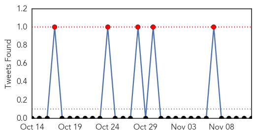

Unknown
30-Day Web Trend
0 alerts, 0 warnings
30-Day Twitter Trend
1 alerts, 0 warnings
Article Locations
Article Confidences

Top Articles:
- 0.993
- Flu vaccination clinic is Thursday
- 0.978
- Number of Portuguese infected with Legionnaires' disease rises to 278
- 0.917
- Chicago Tribune
- 0.917
- Chicago Tribune
- 0.917
- Chicago Tribune
- 0.910
- The world windows to Thailand
- 0.899
- the edge of knowledge
- 0.898
- Portugal traces deadly Legionnaires' outbreak to cooling towers
- 0.866
- Ukraine ceasefire must be observed
- 0.862
- Virus may affect mental abilities
- 0.853
- Political crisis in South Sudan hinders access to antimalarial drugs
- 0.837
- Portuguese plant's cooling towers blamed for legionnaires' outbreak
- 0.798
- Kenya's Catholic bishops warn tetanus vaccine is 'disguised population control'
- 0.787
- Do something really dumb today? Blame it on the 'stupidity virus'
- 0.769
- RUH Advises Local Residents On Norovirus Risk
- 0.759
- 12,000 die of diseases in E. Visayas
- 0.750
- 'Stupidity Virus' Lives In People's Throats, Crosses Over From Algae In Lakes
- 0.720
- Specific gene may help protect against typhoid fever
- 0.683
- TB test results from Shaw High to be released Wednesday
- 0.674
- After Takhatpur, death stalks women at Pendra & Marwahi
- 0.661
- Water contamination claims one life in Gujarat town
- 0.641
- Tetanus Vaccine Laced With HCG Conspiracy or Truth?
- 0.628
- Transfers of doctors to increase patient load
- 0.604
- Sterilisation botch-up: AIIMS docs visit hospitalised women in Chhattisgarh
- 0.596
- Sterilisation Botch-up: AIIMS Docs Visit Hospitalised Women
- 0.594
- Chronic care coordinators improve diabetes monitoring but not blood sugar control
- 0.588
- What really ails Phl public health system
- 0.583
- Middlesex-London Health Unit Nurses in Mediation Today: -- LONDON, Nov. 12, 2014
- 0.580
- Pneumonia vaccine too expensive
- 0.574
- India suspends officials over botched surgery
- 0.555
- One in three Nigerian men are hypertensive
- 0.551
- US and China reach ‘historic’ carbon emission deal
- 0.551
- Russian troops crossing into Ukraine, NATO says
- 0.534
- 12 Women die after sterilization operations in India
- 0.527
- Cervical Cancer Common among People without Immunization against HPV
- 0.510
- Is the WHO Using Vaccines to Secretly Sterilize Women All Over the Globe?
- 0.505
- AKC Canine Health Foundation Takes Aim at Periodontal Disease in Dogs
Top Tweets:
- 0.846
- Debate HCW vaccination flusymposium flu
- 0.758
- Won't we get compliance without compulsion. @HCW flu vaccination flu flusymposium
- 0.642
- Don’t let the flu sack you. Join Julius Thomas & get your flu vaccine VaxWithMe http://t.co/yW2xu9Dmhc
- 0.639
- 18-20% of healthcare workers get hit by flu and pose risk for patients and risk abseeineeism flusymposium flu
- 0.625
- Kylie Carville: Vaccine Effectiveness 2007-2013: 55% flu flusymposium
- 0.609
- Amalie Dya: No measure for adult flu vaccination coverage in Australia. There is no 'whole of life vaccination register!' flu flusymposium
- 0.599
- .@WHEheal is supporting the Sierra Leone Ministry of Health by supplying PPE for health facilities that lack them. (3/5)
- 0.580
- A fluvax is your best defense against seasonal flu. Use the Flu Vaccine Finder to find a vaccine location near you http://t.co/jgRDVM1oVT
- 0.562
- ...y en eso soy irreductible, no les permito que no sepan volar...
- 0.554
- Cartes estará hoy en el Comando en Jefe: El presidente Horacio Cartes estará hoy 12 de noviembre, desde las 7 ... http://t.co/5jGXlNZuP9
- 0.545
- Don’t let flu ruin your Thanksgiving plans. Get a flu vaccine today since it takes 2 wks for fluvax to provide protection. getafluvax
- 0.535
- 'Ongoing ethical debate has limited introduction of mandatory flu vaccination programs in Oz' flu flusymposium
- 0.526
- si pudiera teletransportarme ahora mismo estaría en ese sitio donde se requiere que no tenga ropa
- 0.503
- yo con ganas de volar y tu simplemente ahi en la tierra tan atento
MERS
30-Day Web Trend
0 alerts, 0 warnings

30-Day Twitter Trend
5 alerts, 0 warnings

Article Locations

Article Confidences

Top Articles:
-
No articles found for Nov 12, 2014
Top Tweets:
-
No tweets found for Nov 12, 2014